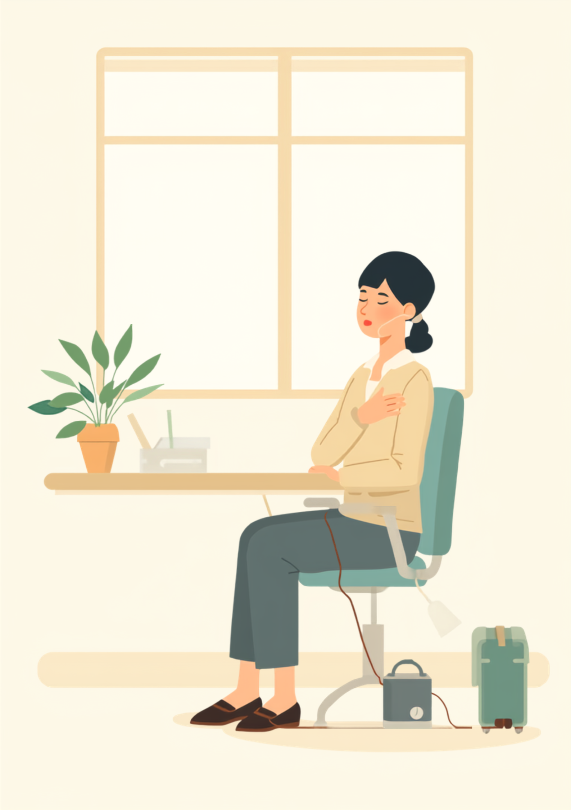
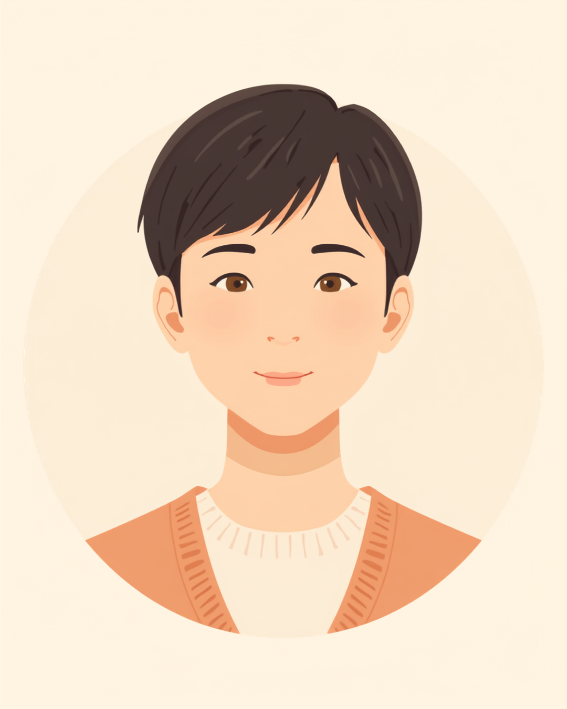

呼吸のしづらさは、傍から見えにくいぶん「大丈夫そうに見えるのに」と誤解されやすい障害です。呼吸器機能障害がある方は、階段や外回りでの息切れ、なかなか治まらない咳、在宅酸素療法（HOT）の酸素ボンベなど、仕事のさまざまな場面で特有のしんどさを抱えています。この記事では、呼吸器機能障害があり働く方が感じやすい職場との摩擦と、伝え方、使える制度を当事者の声をもとに整理しました（2026年8月時点の情報です）。
PR



会議のあと、ひとりになってから静かに息を整える時間がある
「その咳、大丈夫?」と聞かれるたびに愛想笑いで濁す

呼吸器機能障害は、肺や気管支の働きが低下し、呼吸をするだけで人よりも多くの体力を使ってしまう状態です。原因はCOPD（慢性閉塞性肺疾患）や間質性肺炎、気管支拡張症などさまざまで、症状の現れ方や程度も人によって大きく異なるとされています。まめざる
就労支援の現場で関わってきた中で、こんな声を何度も聞いてきました。「咳が続くだけで、コロナかなにかだと思われてる気がするんです」というものです。持病による咳は、風邪やウイルス性のものとは違い、何週間も何ヶ月も続くことがあります。それでも周囲からすれば、続く咳は「うつるかもしれないもの」に見えてしまいやすく、「その咳、大丈夫?」と聞かれるたびに、いちいち事情を説明するのも億劫で、つい「大丈夫です、平気です」と愛想笑いで濁してしまう、という方は少なくないようです。
本人にとっては、決して隠しているわけでも、大げさに振る舞っているわけでもありません。ただ、毎回「これは感染症じゃなくて、持病の咳なんです」と説明するのは、それだけでひと仕事です。結果として、説明を諦めて笑ってやり過ごすことが増え、周囲には「よくわからないけど元気そうな人」という印象だけが残ってしまいがちです。
!
呼吸器機能障害の原因疾患や症状の現れ方には個人差があります。この記事で挙げる内容がそのまま当てはまるとは限らないため、体調に不安がある場合は自己判断せず主治医に相談することをお勧めします。
「COPDと診断されて3年になります。もともと咳込みやすい体質なんですけど、去年の冬なんて、咳をするたびに周りの人がさっと椅子ごと少し離れるのが分かって。悪気がないのは頭では分かってるんです。でも毎回『これ、うつらないので大丈夫ですよ』って笑顔で言うのが、正直めちゃくちゃ疲れて。ある日、思い切って部署のみんなに『体質的な咳で、感染するものではありません』って一斉にメールで伝えたら、拍子抜けするくらいあっさり浸透して、あの時もっと早く言えばよかったなと思いました。」
40代・女性（COPD・事務職）
息切れと「人より体力を使う」感覚、仕事にどう影響するか
呼吸器機能障害があると、階段の上り下りや荷物を運ぶといった、健康な人なら何でもない動作でも人より多くの体力を使ってしまうとされています。少し歩いただけで息が上がり、しばらく立ち止まって呼吸を整えないと次の動作に移れない、という感覚を抱える方もいるようです。それが「サボっている」「大げさだ」と誤解されてしまうと、本人にとってはさらに苦しい状況になります。
i
身体障害者手帳における呼吸器機能障害の等級は、予測肺活量1秒率や動脈血ガス（血液中の酸素濃度）の数値、医師の臨床所見などを総合して判定されるとされています。1級にあたる方は日常生活に強い制限を受けることがある一方、3級にあたる方は家庭内の生活に支障はなくても、中長距離の移動で体力を大きく消耗するとされています。等級によって生活への影響の度合いは大きく異なります。
このように、同じ「仕事」という言葉の中にも、体力の消耗度が大きく異なる業務が混在しています。デスクワーク中心の日であれば問題なくこなせても、外回りや荷物運びが重なる日には、同じ8時間勤務でも疲れ方がまったく違う、という声もよく聞かれます。
「間質性肺炎で在宅酸素療法（HOT）を始めたのが1年前です。それまでは営業で外回りもこなしていたんですけど、片道1時間の移動だけで息が上がるようになって。酸素ボンベを持って電車に乗るのが恥ずかしくて、最初の3ヶ月は本当につらかったです。今は内勤に異動させてもらって、正直ほっとしています。営業として頑張ってきたプライドみたいなものは多少ありますけど、無理して外回りを続けていたら、もっと早く倒れてたと思います。」
50代・男性（間質性肺炎・在宅酸素療法／営業職から内勤へ異動）
職場にどう伝えるか、酸素ボンベや体力面の配慮を引き出すために
具体的な場面に絞って伝えるという考え方
呼吸器の病名や治療の詳細まですべて説明しようとすると、かえって伝わりにくくなることがあります。業務に関わる具体的な場面だけに絞って伝える方法が、双方にとって負担が少ないとされています。
- 「この持病のせいで咳が続くことがありますが、うつるものではありません」
- 「階段よりエレベーターを使わせてもらえると助かります」
- 「重い荷物は分担してもらえると助かります」
- 「外回りの際は、酸素ボンベを持って移動する時間を考慮してもらえると安心です」
「うつるものではない」という一言だけでも、周りの受け止め方はだいぶ変わることがあります。毎回謝りながら説明するのではなく、あらかじめ簡潔な言葉を用意しておくと、伝えるたびの負担が軽くなるはずです。まめざる
相談の一コマ

相談者
在宅酸素を始めてから、鼻のチューブを上着の中に隠すようにして通勤してるんです。見られるのが恥ずかしくて。でも会議中にずれてきたりすると、それも気になって集中できなくて。
まめざる
隠したい気持ちはよく分かります。ただ、隠すことに気を取られて疲れてしまうくらいなら、信頼できる人にだけ先に伝えておく、という方法もありますよ。
相談者
伝えるとしたら、何をどこまで話せばいいんでしょうか。
まめざる
病名の全部を話す必要はありません。「呼吸の持病があって、酸素のチューブを使っています」「体力を使う作業は少し配慮してもらえると助かります」くらいで十分なことが多いです。まずは上司や人事など、信頼できる一人から始めてみてください。
病名や治療の詳細まで伝える義務はありません。信頼できる上司や人事担当者に、業務に関わる範囲でまず共有し、そこからチーム内に必要な情報だけ広げてもらう、という進め方をとっている方もいるようです。就職活動の段階から体力面の制約を伝えておくことで、入社後の業務調整がしやすくなったという声も聞かれます。
使える制度と、一人で抱えないための相談先
身体障害者手帳という選択肢
呼吸器機能障害は、身体障害者手帳の内部障害の区分に含まれる場合があります。等級は肺活量の検査結果や血液中の酸素濃度、医師の臨床所見などをもとに総合的に判定されるとされているため、詳しくは主治医や自治体の障害福祉窓口に確認するのが確実です（2026年8月時点の情報です）。手帳を取得すると、障害者雇用枠での就職や、企業側の合理的配慮を前提にした働き方を選びやすくなる場合があります。
障害年金という、手帳とは別の制度
呼吸器機能障害の程度によっては、障害年金の対象となるケースがあるとされています。ただし障害年金の等級は身体障害者手帳の等級とは別の基準で判定される仕組みのため、両方の制度を別々に確認しておく必要があります（2026年8月時点の情報です）。金額や要件は個別の状況によって異なるため、年金事務所や社会保険労務士に相談することをお勧めします。
相談できる窓口
- 主治医・呼吸器内科（体調の記録や、働き方についての意見書の相談）
- 職場に選任されている産業医（50人以上の事業場に選任義務あり）
- 自治体の障害福祉窓口、身体障害者手帳の相談窓口
- 在宅酸素療法の機器業者（酸素濃縮器のメンテナンスや外出時の相談）
- 就労移行支援事業所（体力面を含めた就労準備や職場との調整）
呼吸器機能障害の原因疾患や症状の現れ方、必要な配慮の内容には個人差があります。この記事の内容がそのまま当てはまるとは限らないため、実際の判断は主治医・支援者・自治体の窓口とよく相談しながら進めることをお勧めします（2026年8月時点の情報です）。
続く咳も、階段での息切れも、サボりでも大げさでもありません。毎回愛想笑いで濁すのではなく、「うつるものではない」「体力を使う作業には配慮がほしい」と、決まった言葉で先に伝えておくことは、決して大袈裟なことではありません。
よくある質問
Q. 呼吸器機能障害があっても正社員として働けますか？
実際に正社員として働いている方は多くいるとされています。ただし体力の消耗度や通院頻度によって必要な配慮は異なるため、勤務時間や業務内容の調整について事前に相談しておくと安心です。
Q. 在宅酸素療法（HOT）をしながら通勤することはできますか？
携帯用の酸素ボンベや小型の酸素濃縮器を使うことで、通勤や外出を続けている方もいるとされています。持ち運びの負担や外出先での残量管理が課題になることもあるため、主治医や医療機器業者と相談しながら準備を進める方法があります。
Q. 呼吸器機能障害は身体障害者手帳の対象になりますか？
呼吸器機能障害は身体障害者手帳の内部障害の区分に含まれる場合があります。等級は予測肺活量1秒率や動脈血ガスの数値、医師の臨床所見などをもとに総合的に判定されるとされているため、詳しくは主治医や自治体の障害福祉窓口にご確認ください（2026年8月時点の情報です）。
Q. 咳が続くことを職場にどう伝えればいいですか？
感染症ではなく持病によるものだと一言添えるだけでも、周囲の受け止め方が変わることがあるとされています。症状の詳細まで説明する必要はなく、「体質的なもので、うつるものではありません」など簡潔に伝える方法があります。
Q. 呼吸器機能障害があると、どんな仕事が向いていますか？
体力を消耗する肉体労働や長時間の立ち仕事、屋外での作業は負担が大きくなりやすいとされ、デスクワークや在宅ワークなど身体的な負荷が少ない仕事を選ぶ方が多いようです。ただし向き不向きは症状の程度によって異なるため、就労移行支援事業所などに相談しながら仕事を選ぶ方法もあります。
我慢し続けるより、先に伝えておくほうが気持ちは軽くなる
PR


一人で抱え込む前に、今の気持ちを話してみませんか
「まだ迷っている」段階でも大丈夫です。mimemimeの無料相談は、今の状況の整理から一緒に始められます。
無料で話してみる
この記事に、聞いてみたいことはありますか？
「自分の場合はどうなんだろう」と思ったことを、気軽に書いてみてください。いただいた質問は個別にお返事したうえで、匿名で記事にすることがあります。
おのざる
mimemime代表。就労支援の現場経験をもとに、障がいのある方の働く不安に寄り添う記事を執筆。